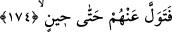

yapılmış olan sur ve kaleleriyle silahlarına güvenenler, hezimet ve bozguna uğrayıp
mağlup ve perişan olurlar.
Hak’tan gayrıya dayanmak sırf bilgisizlik ve hevâdandır
Mâsivâya itimadın asla neticesi olmaz
Sonra Allah Teâlâ’nın ordusu, “el-Azîz” ve “el-Müntekım” isimlerinin ve “Bilakis
biz, hakkı bâtılın tepesine bindiririz de o, bâtılın işini bitirir. Bir de bakarsınız ki,
bâtıl yok olup gitmiştir. (Allah’a) yakıştırdığınız sıfatlardan dolayı yazıklar olsun
size!” (el-Enbiya 21/18) âyet-i kerimesinin mazharıdırlar.
et-Te’vîlâtü’n-Necmiyye’de der ki: Allah’ın ordusu dinini yaymak, hakka yardım
etmek ve hakkı beyan etmek üzere tâyin ve ikame ettiği kimselerdir. Kim bunları zelil ve
hakir etmek isterse kendisi tökezleyip yüzüstü düşer.
Hadis-i şerifte vârid olduğu üzere ordu iki çeşittir: “Birincisi gazâ ve savaş ordusu,
ikincisi dua ordusudur.” Gazâ ordusu savaş eğitim ve tekniklerini icra etmeli ve
savaşmalıdır. Dua ordusu da dua işini icra etmeli; ilim, zikir ve edeple meşgul
olmalıdır. Kim gönül huzurunu bulur ve uyanık olursa o duasının kabulünü bekleyebilir.
Kim de gaflet ve gevşeklik gösterirse duâsının kabul olmayacağından korksun.
Senin duan nasıl kabul olunsun ki
Bir yüz ile iki mihraba dönersin
Hadis-i şerifte şöyle vârid olmuştur: “Ümmetimden bir taife hak üzere savaşmaya
devam edecek ve düşmanlarına galib gelecektir. Nihâyet onların sonuncusu Mesih
Deccal ile savaşacaktır.”[225] Şüphe yok ki Osmanlı padişahları bu taifenin sonudur. İsa
ve Mehdi (a.s.) ise bu son taifenin son fertleridirler. Kıyamet kopacağı zaman
yeryüzündeki bütün kâfir ve facirleri yakalayacak olan korkunç ses ise bu ümmetin
sonunun sonunun sonudur.
174. Onun için sen bir süreye kadar onlara aldırma.
Ey Muhammed! (s.a.) “Onun” yardım ve zaferinin sana ve ümmetine ait olduğunu
bildiğin “için sen bir süreye” yani onlarla savaş emri gelinceye “kadar onlara
aldırma.”
Bu âyet, muhkem olup “kıtâl” ayetiyle mensuh değildir.